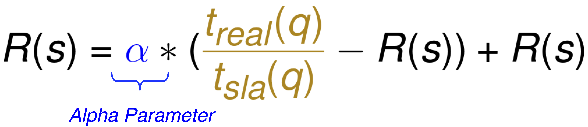
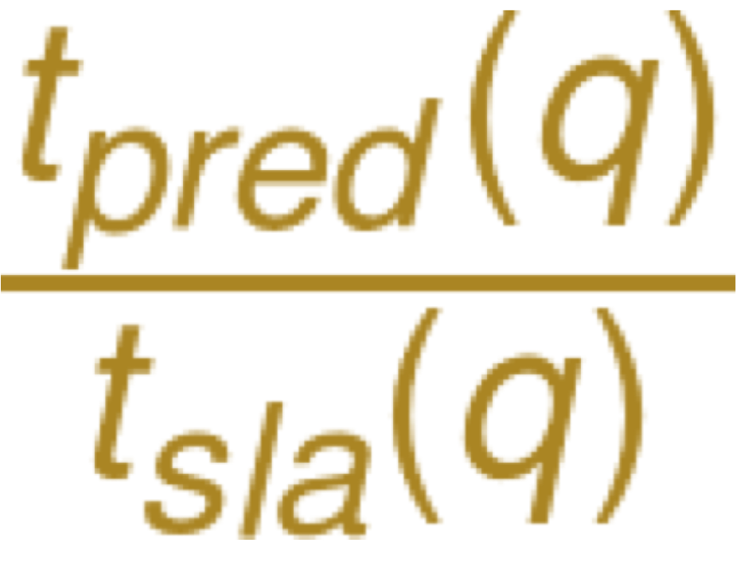

Once the user selects an SLA, it is up to the cloud provider to guarantee those runtimes. Below are different approaches the provider can enable in order to guarantee those runtimes.
Reinforcement Learning
Each cluster size represents a state. For each query, the goal is to transition to the state with the highest reward. The reward function is defined as the real-to-SLA runtime ratio. We favor states with the closest reward to 1.0.
Update function after running query at current state:

Update function after running query for the rest of the states:
We can regulate the system in order to ensure that it operates based on a given reference point, r(t) = 1.0. The system reacts based on the magnitude of the error.
For each incoming query, PerfEnforce predicts the runtime for the query for each configuration and switches to the closest configuration where  is closest to 1.0 before running the query.
To do this, we build an offline model for the given cloud service. The perceptron algorithm works by adjusting weights for each new data point based on a tunable learning rate parameter.